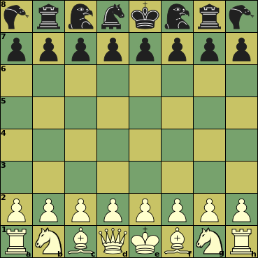
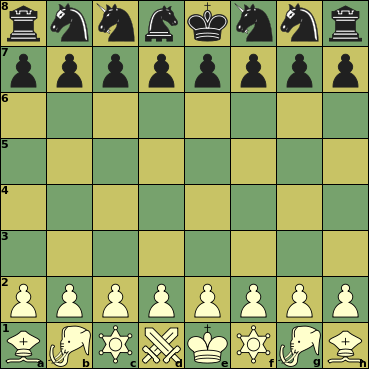

Sliding capture or non-capture,
can be blocked on any square along the ray


This is actually a group of variants. It defines a number of 'armies', each containing of an orthodox King and Pawns, plus 7 other pieces of 4 different types. The orthodox FIDE army, with pieces Q, R, B and N, is one example of this. But there are many armies considting of four completely different pieces, together of approximately equal strength as the FIDE army. Here we discuss three possible realizations of this.
Each of these four armies can be pitted against each of the others, with either color.
|  |
Initial setupRemarkable-Rookies army
e1, e8: King
Fabulous-FIDEs army
e1, e8: King
|
|  |
Nutty-Knights army
e1, e8: King
Color-bound Cloberers army
e1, e8: King
|
Click on a piece below to see its moves
|
|
|
|
|
Sliding capture or non-capture, | |||||||
|
| Unblockable leap (capture or non-capture) | ||||||||||
|
|
|
| Non-capture only | ||||||||
|
|
|
|
|
| Capture only | ||||||
|
|
|
|
| ||||||||
|
| |||||||||||
|
|
|
|
:
:
:
:
| Piece | ID | value | Moves (Betza notation) | Remarks |
| Common to all armies | ||||
| King | K | - | K | Can castle with corner piece |
| Pawn | P | 1 | mfWcfF | Promotes to any piece specific to the army on reaching last rank |
| FIDE army | ||||
| Queen | Q | 9.5 | RB or Q | |
| Rook | R | 5 | R | |
| Bishop | B | 3.25 | B | Color-bound |
| Knight | N | 3.25 | N | |
| Clobberers army | ||||
| Archbishop | A | 8.75 | BN | |
| Leaping Bishop | L | 5 | BD | Color-bound |
| Clobberer | C | 4.5 | FAD | Color-bound |
| Elephant | E | 3 | WA | |
| Nutters army | ||||
| Colonel | C | 9.5 | fRsRKfhN | |
| Turret | T | 5 | bKfsR | |
| Unicorn | B | 3.75 | fhNbsK | |
| Horse | H | 3 | FbbNffN | |
| Rookies army | ||||
| Marshall | M | 9 | RN | |
| Short Rook | S | 4.5 | R4 | |
| Half Duck | B | 4 | HFD | |
| Woody | W | 3 | WD | |
A King that has not moved before can (in general) move two squares in the direction of a corner piece that has not moved before, in which case that corner piece is moved to the square next to the King on the other side. This is only allowed if all squares traveled through by King and corner piece are empty (after their removal), when the King is not in check on the square it came from, and would not be in check on any of the squares it skipped over. When the corner piece is color-bound, however, the King moves 2 or 3 squares, subject to all other rules mentioned above, to make sure the piece it castles with stays on the same color.
Man of the pieces in the various army are quite exotic even by the standards of Chess variants, and XBoard does not know them. So Chess with different Armies has to be played with legality testing off, using pieces XBoard does implement for different purposes. CwDA is also not an variant name known to XBoard; it has to be played as the catch-all variant 'fairy'. This variant can mean anything as far as XBoard is concerned; you have to tell the engine what you actually want to play, and then the engine will tell it to XBoard (i.e. which piece symbols to use, in which initial setup). So CwDA cannot be played without an engine that knows how to play it.
Fairy-Max implements various versions of CwDA. With a combobox in the Engine Settings dialog you can select which version you want to play (e.g. Clobberers-Nutters) as variant fairy. When you then select 'fairy' from the New Variant dialog (or start a New Game when 'fairy' was already selected) the engine will setup the game for the selected armies.
Except for the FIDE army, all armies consist of pieces (not King and Pawns) that move in completely different ways.
It is not possible to force checkmate on a bare King with just a single Bishop or Knight (in addition to your own King). Two Knights cannot do that either. It is not possible to force checkmate on a bare King with just a single Elephant or C or L (in addition to your own King). A pair CC, LL or CL on unlike colors can force checkmate without help of their King. A pair of Elephants can checkmate with help of their King. It is not possible to force checkmate on a bare King with just a single Fibnif or a pair of them (in addition to your own King). All pieces of the Rookies army can force checkmate against a bare King.
Bishops, C and L are confined to squares of a single color. Having Bishops on both colors compensates this weakness, and is worth an extra 0.5 on top of their added value. Combining other color-bound pieces on unlike colors is expected to involve even larger bonuses.